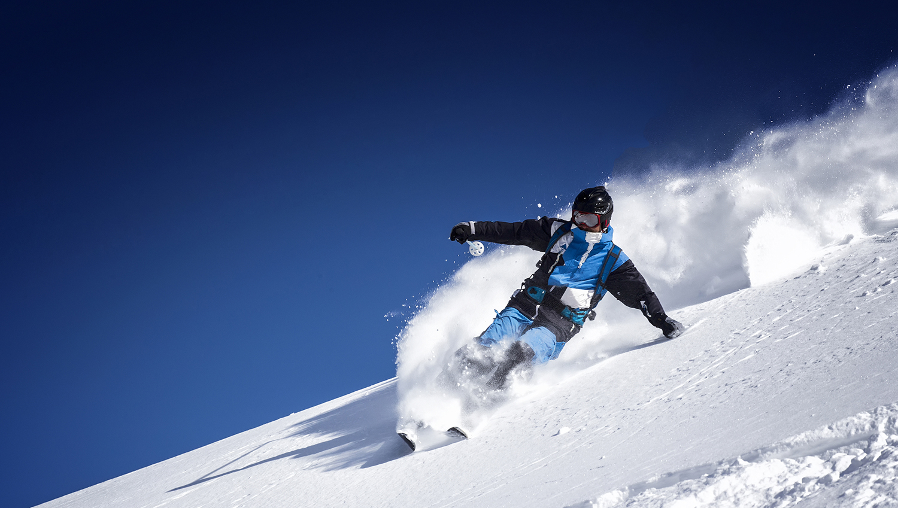
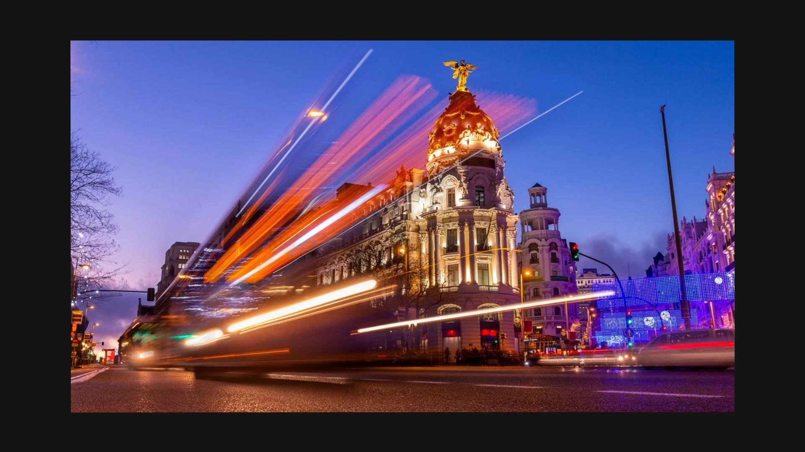
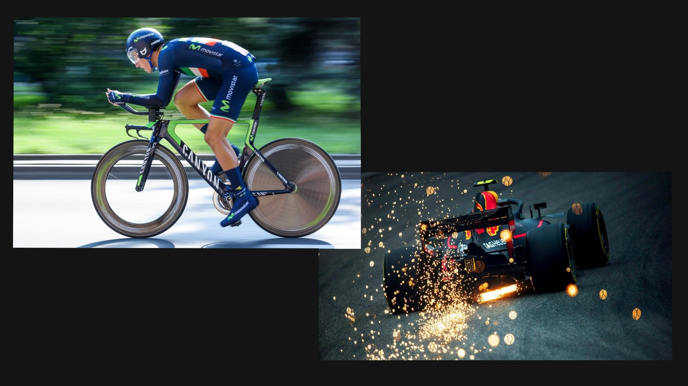
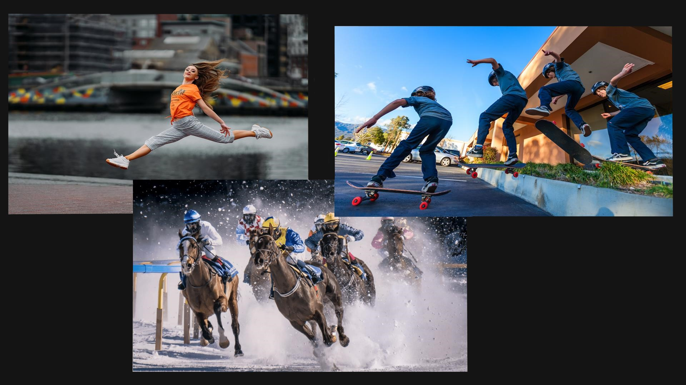

FOTOGRAFISANJE LJUDI I OBJEKATA U POKRETU
Fotografisanje objekata koji se kreću predstavlja jednu od najzanimljivijih tema u oblasti fotografije. Sa druge strane, to je svakako jedna od najkomplikovanijih tehnika u fotografiji. Ova vrsta fotografije zahteva veliko strpljenje, određeno fotografsko iskustvo, pa i malo sreće.
Brzina okidača koju odaberemo određuje način na koji će biti snimljeno kretanje objekata na fotografiji.Velike brzina okidača omogućuju zamrzavanje kretanja, dok male brzine okidača naglašavaju pokretni motiv i time povećavaju osećaj kretanja.

Brzina zatvarača od 1/30 s dobra je za bicikle, dok su brzine zatvarača između 1/60 s i 1/125 s dobre za automobile i motocikle.

Ako aparat nema dovoljnu brzinu okidača, mogu se podesiti odgovarajuće ISO vrednosti.
Top 3 continuous shooting je mod u kome od momenta pritiskanja okidača fotoaparat pravi tri uzastopna snimka.
Final 3 continuous shooting je mod koji beleži niz fotografija sve vreme dok je prst na okidaču aparat, a od momenta pomeranja prsta sa okidača, u aparatu će ostati sačuvane tri poslednje snimljene fotografije.
